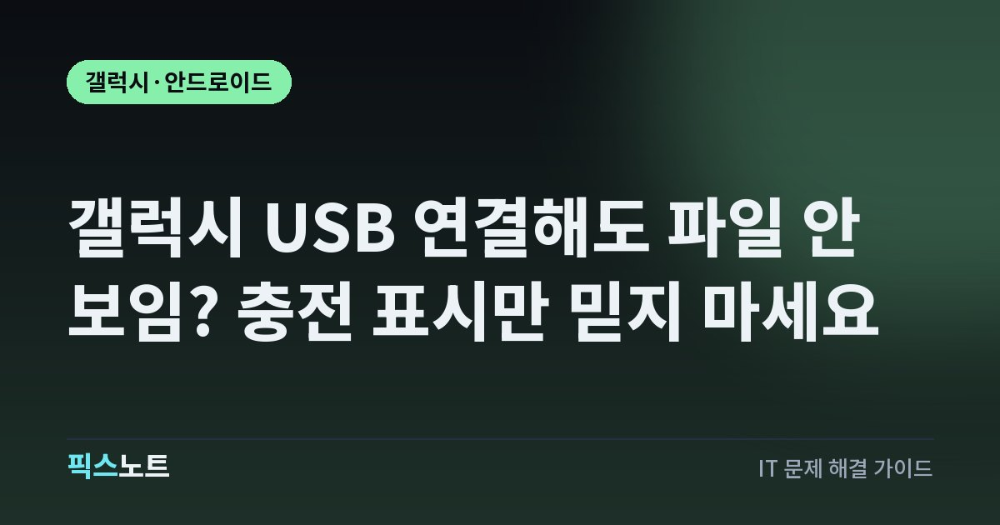

갤럭시 USB 연결해도 파일 안 보임? 충전 표시만 믿지 마세요
갤럭시를 Windows PC에 연결해도 파일이 안 보일 때 잠금 해제, USB 전송 모드, 케이블과 포트를 차례로 확인해요.

갤럭시를 컴퓨터에 꽂으면 충전은 되는데 사진 폴더가 보이지 않을 때가 있어요. 충전 표시가 뜬다고 데이터 연결까지 정상이라는 뜻은 아니에요. 삼성과 Google의 공식 안내를 바탕으로 전송 허용과 케이블을 먼저 확인하고, 사진을 복사한 뒤 확인하는 순서까지 정리했어요.
충전과 파일 전송이 되는지는 따로 확인해요
휴대전화 배터리 아이콘이 충전으로 바뀌었어도 파일 탐색기에 기기가 나타나지 않을 수 있어요. 삼성은 이런 상황에서 파일 전송을 지원하는 케이블인지 확인하고 허브 대신 PC 포트에 직접 연결해 보라고 안내해요. 전원 공급과 데이터 전송을 같은 확인으로 끝내지 않는 것이 핵심이에요. 이 글은 Windows 컴퓨터에서 갤럭시의 사진과 문서를 복사하려는 경우를 다뤄요. Android Auto 차량 연결이나 휴대전화 전체를 새 기기로 이전하는 절차와는 목적이 달라요. 먼저 휴대전화 이름 자체가 안 보이는지, 이름은 보이지만 내부 파일이 안 보이는지 적어두세요. 연결 모드나 허용 화면을 확인한 결과와 함께 기록하면 케이블을 바꾸기 전후의 차이를 비교하기 쉬워요.
잠금 해제와 데이터 접근 허용부터 해요
Google의 USB 파일 전송 안내는 기기 잠금을 해제하는 것으로 시작해요. 화면을 켜는 것과 잠금을 푸는 것은 다르니 홈 화면까지 들어간 뒤 연결해요. 삼성 안내에는 휴대전화 데이터에 접근하도록 허용하는 요청이 표시되면 허용하는 절차가 있어요.
- 갤럭시 잠금을 풀고 직접 사용하는 Windows PC에 USB 케이블로 연결해요.
- 데이터 접근 요청이 뜨면 연결한 컴퓨터가 맞는지 확인하고 허용해요.
- 요청이 없으면 화면 위에서 알림 패널을 내려 USB 연결 알림을 찾아요.
처음부터 알림이 전혀 안 뜨는 경우와 요청을 거절한 경우를 나눠 보세요. 알림을 확인하려고 출처 모르는 프로그램을 설치할 필요는 없어요. 공용 충전기에서 파일 접근 요청이 뜬다면 사진을 옮길 PC에 연결한 것이 맞는지도 다시 확인해요.
USB 용도를 파일 전송으로 바꿔요
삼성의 공식 안내에서는 USB 설정 알림을 누른 뒤 Transferring files/Android Auto를 선택하도록 설명해요. 이 문서는 호주 판매 기기 기준이라 한국어 메뉴 문구와 화면 배치는 기종이나 소프트웨어에 따라 다를 수 있어요. 같은 영어 문구가 없다고 메뉴가 사라졌다고 단정하지 말고 USB 연결의 파일 전송 용도를 찾아요.
- 휴대전화 알림 패널에서 USB 연결 설정을 열어요.
- 충전 용도 대신 파일을 전송하는 항목을 선택해요.
- PC에서 파일 탐색기를 열고 휴대전화 이름과 내부 저장 공간이 보이는지 확인해요.
여기서 항목이 표시되는지 먼저 보세요. 개발자 옵션이나 USB 디버깅을 켜는 과정은 삼성의 일반 파일 복사 절차에 포함되지 않아요. 사진 복사만 하려는 상황에서 복잡한 개발 설정부터 바꾸지 마세요.
케이블 하나와 PC 포트 하나씩 바꿔 비교해요
충전용으로 쓰던 케이블이 파일 전송도 지원하는지는 따로 확인해야 해요. 삼성과 Google 모두 일부 케이블은 데이터 전송을 지원하지 않을 수 있다고 안내해요. 케이블을 새로 구매하기 전에 다른 기기에서 실제 파일 복사가 됐던 케이블이 있는지 찾아보세요. 그 케이블로 갤럭시와 PC를 직접 연결해요. USB 허브나 모니터를 거쳤다면 중간 장치를 빼고 비교해요. 케이블, 포트, 설정을 한꺼번에 바꾸면 무엇이 달라져서 연결됐는지 알기 어려워요. 같은 포트에서 케이블만 바꾸고, 다음에는 같은 케이블로 다른 포트를 써요. 새 케이블을 고른다면 단자의 모양이나 충전 출력만 보지 말고 제품 설명에 데이터 전송 지원이 명시됐는지 확인해요.
폴더가 열리면 작은 파일부터 복사해요
삼성 안내에서 카메라 사진과 동영상은 DCIM 안의 Camera, 다운로드 파일은 Download, 문서는 Documents 폴더를 살펴보도록 설명해요. 다만 앱과 저장 위치에 따라 다른 폴더에 있을 수 있으니 원하는 파일이 휴대전화 어디에 있는지도 함께 확인해요. 처음부터 모든 폴더를 옮기기보다 필요한 사진 몇 장을 PC의 새 폴더에 복사해 보세요. 이때 파일을 이동해서 원본을 없애기보다 복사본부터 확인하는 순서를 권해요. 복사 창이 닫힌 뒤 PC에서 사진이 열리는지, 동영상이 재생되는지 확인해요. 폴더가 보인다는 사실과 필요한 파일이 온전히 옮겨졌다는 사실은 따로 확인해야 해요. 삼성은 파일 복사 작업이 끝난 뒤 USB 케이블을 분리하라고 안내해요.
다른 컴퓨터로 비교하고 두 기기를 재시작해요
설정을 바꿔도 파일이 안 보이면 Google이 안내하는 교차 확인을 해요. 휴대전화를 다른 컴퓨터에 연결하면 휴대전화 쪽 포트를 점검하는 데 도움이 되고, 현재 컴퓨터에 다른 기기를 연결하면 컴퓨터 포트의 상태를 비교할 수 있어요. 한 번의 실패만으로 휴대전화 단자가 고장 났다고 단정하지는 마세요. 데이터 전송이 되는 케이블과 직접 연결 조건을 유지한 채 비교해야 해요. 그다음 컴퓨터와 휴대전화를 다시 시작해 연결을 새로 시도해요. 휴대전화 소프트웨어 업데이트가 있는지도 확인해요. 회사 컴퓨터에서만 안 된다면 개인 기기의 연결을 허용하는지 담당자에게 물어보고, 업무용 보안 설정을 임의로 해제하는 대신 확인 결과를 전달해요.
급한 파일은 공식 무선 전송 방법도 고려해요
지금 문서 몇 개를 보내야 한다면 USB 문제 진단과 별개로 Quick Share를 대안으로 검토해요. Google의 Windows용 Quick Share 안내는 이미지·동영상·문서 전송을 지원하고, 두 기기의 무선 연결과 공개 범위 등을 확인하도록 설명해요. 삼성 PC는 Microsoft Store에서 제공되는 삼성의 Quick Share 앱을 사용하도록 안내하고 있어요. 앱을 구하려면 제조사나 Google의 공식 경로를 이용해요. 연결이 안 된다는 이유로 아무 파일 공유 프로그램이나 설치하지는 마세요. 내 기기끼리 보낼 때는 공개 범위를 내 기기로 정하고 받는 기기가 맞는지 확인해요. 무선 전송이 됐다는 사실만으로 USB 포트가 정상이라고 판단할 수는 없으니, 케이블 문제는 필요할 때 별도로 확인해요.
그래도 안 되면 연결 조건을 적어 문의해요
삼성 지원에 문의할 때는 갤럭시 모델명, 소프트웨어 버전, Windows 버전, 케이블의 데이터 전송 지원 여부, 허브 사용 여부를 함께 알려주세요. 충전만 되는지, USB 알림이 뜨는지, 파일 전송을 선택할 수 있는지, 파일 탐색기에 기기 이름까지는 보이는지도 적어두세요. 다른 케이블이나 다른 PC에서의 결과를 함께 전달하면 같은 확인을 반복하는 일을 줄일 수 있어요. 파일이 중요한 상황에서는 공장 초기화나 저장 데이터 삭제를 첫 대응으로 삼지 말고 복사 가능한 경로를 먼저 확보해요. 포트 손상이 의심되면 억지로 케이블을 비틀어 꽂지 말고 점검을 받아요. 복사가 정상으로 끝난 자료는 PC에서도 직접 열어 확인하고 원본을 지울지 결정해요.
자주 묻는 질문
갤럭시 충전은 되는데 컴퓨터에서 사진이 안 보여요
충전 표시만으로 데이터 연결을 확인할 수는 없어요. 잠금을 풀고 USB 연결 용도를 파일 전송으로 선택한 뒤, 데이터 전송을 지원하는 케이블과 PC 직접 연결로 다시 확인해요.
갤럭시 사진을 옮기려면 USB 디버깅을 켜야 하나요?
삼성의 일반 USB 파일 복사 안내에는 USB 디버깅을 켜는 단계가 없어요. 먼저 데이터 접근 허용과 파일 전송 모드, 케이블을 확인하고 개발자 설정은 건드리지 않는 순서로 진행해요.
갤럭시 사진 복사 중에 케이블을 빼도 되나요?
삼성은 PC에서 파일 복사 작업이 끝난 다음 연결을 해제하라고 안내해요. 복사 창이 닫혔는지 확인하고 PC에 저장된 파일을 열어본 뒤 케이블을 분리하고, 원본 삭제는 그다음에 판단해요.